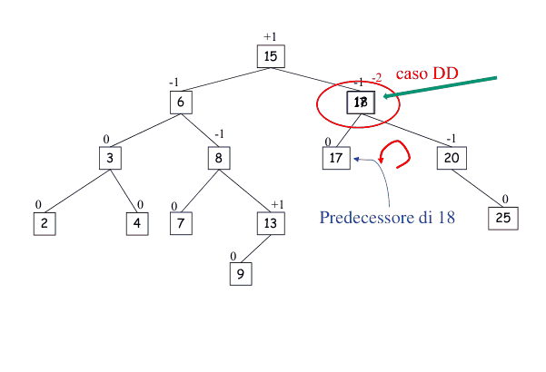
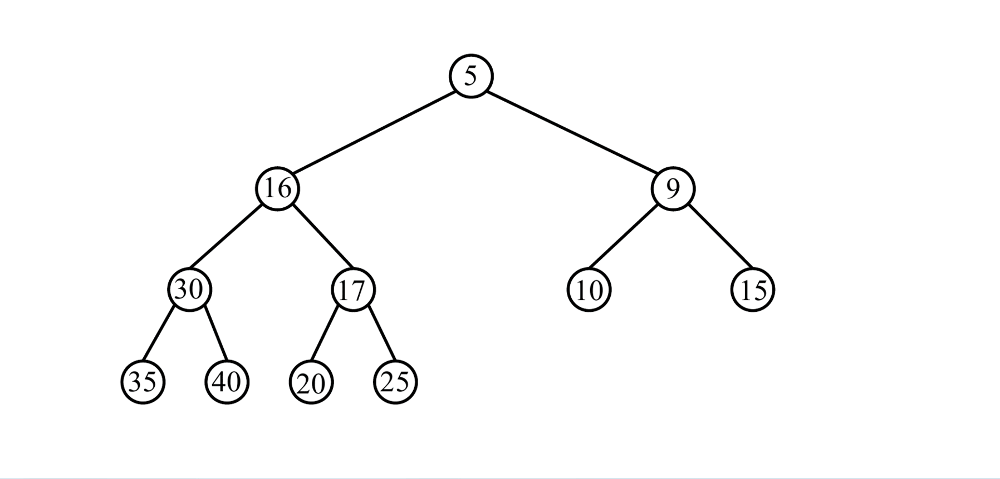
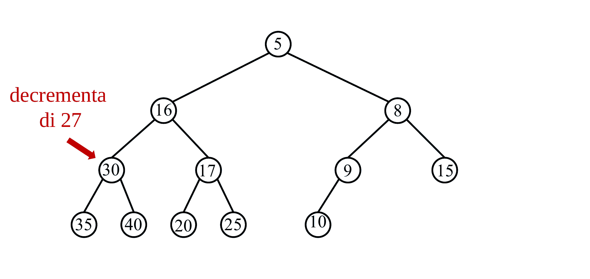
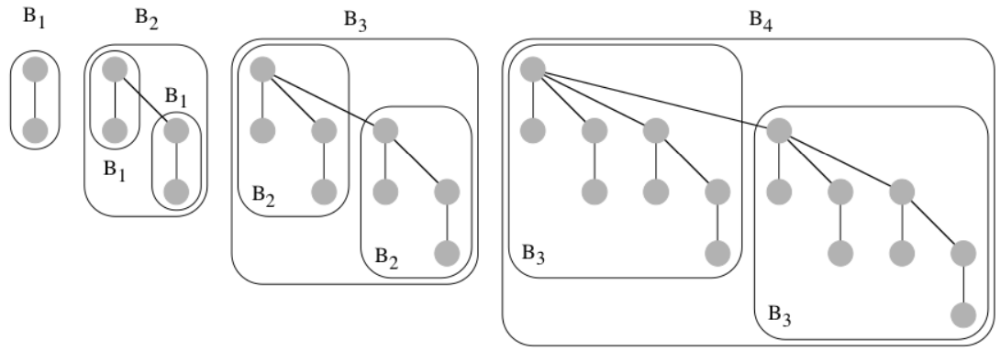

FIBONACCI
RICERCA
RICERCA BINARIA (costo )
RicercaBinaria(array A, elem x, int i, int j)
if (i > j) then return -1
m = [(i + j) / 2] // PARTE INFERIORE
if (A[m] == x) then return m
else if (A[m] > x) then
return RicercaBinaria(A, x, i, m-1)
else
return RicercaBinaria(A, x, m+1, j)ORDINAMENTO BASATO SU CONFRONTI
SELECTION SORT (costo )
SelectionSort(A)
for k = 1 to n-1 do
m = k
for j = k+1 to n do
if (A[j] < A[m]) then
m = j
Scambia A[m] con A[k+1]MERGE SORT (cost )
MergeSort(A, i, f)
if (i < f) then
m = [(i + f) / 2] // PARTE INFERIORE
MergeSort(A,i,m)
MergeSort(A, m+1, f)
Merge(A, i, m, f)
if (i = f) then return A[i]MERGE ()
Merge(A, i, m, f)
X = array ausiliario di dimensione f-i+1
j = 1, k_1 = i
k_2 = m+1
while(k_1 < = m AND k_2 < = f) then
if(A[k_1] < A[k_2]) then
X[j] = A[k_1]
incrementa k_1 e j
else
X[j] = A[k_2]
incrementa k_2 e j
if (k_2 < = f) then
Inserisci alla fine di X -> A[k_2, f]
else
Inserisci alla fine di X -> A[k_1, m]
Copia X in A[i, f]QUICK SORT ( oppure )
QuickSort(A, i, f)
if (i < f) then
m = partition(A, i, f)
QuickSort(A, i, m-1)
QuickSort(A, m+1, f)PARTITION
Partition(A, i, f)
x = A[i]
inf = i
sup = f + 1
while (true)
do (inf += 1) while (inf < f AND A[inf] <= x)
do (sup -= 1) while (A[sup] > x)
if (inf < sup) then
scambia A[inf] e A[sup]
else
break
Scambia A[i] e A[sup]
return supTipo di dato
Specifica una collezione di oggetti e una serie di operazioni di interesse su tale collezione. Nel senso immagina di avere un array di interi:
- collezione: tutti gli interi
- tipo di dato: l’array di interi e le operazioni che posso fare su quell’array Allo stesso modo abbiamo:
- dizionario
- int, boolean, double ecc. (questi son tipi di dati PRIMITIVI)
Struttura dati
Organizzazione dei dati che permette di memorizzare la collezione e supportare le operazioni di un tipo di dato usando meno risorse di calcolo possibile. Quindi il modo più ottimale in cui io posso gestire il mio tipo di dato.
HEAP E HEAPSORT (quindi ancora sui confronti)
Proprietà Heap
- completo fino al penultimo livello (struttura rafforzata: foglie sull’ultimo livello tutte compatte a sinistra)
- gli elementi di S sono memorizzati nei nodi dell’albero (ogni nodo v memorizza uno e un solo elemento, denotato con
chiave(v)) - le chiavi devono avere una proprietà, Di conseguenza altre proprietà
- Il
maxè contenuto nella radice - Con
nnodi l’altezza è - UN heap può essere rappresentato con un array di grandezza
n
FIX HEAP ()
FixHeap(nodo v, Heap H)
if(v non è una foglia) then
sia u il figlio di v con chiave massima
if(chiave(v) < chiave(u)) then
scambia chiave(u) con chiave(v)
FixHeap(u, H)Versione per l’array
FixHeap(i, A)
s = 2i
d = 2i + 1
n = Heapsize[A]
if (s ≤ n e A[s] > A[i]) then
massimo = s
else massimo = i
if (d ≤ n e A[d] > A[i]) then
massimo = d
if (massimo != i) then
scambia A[i] con A[massimo]
FixHeap(massimo, A)Heapify ()
Heapify(H)
if (H non è vuoto) then
Heapify(sottoalbero sx di H)
Heapify(sottoalbero dx di H)
FixHeap(radice di H, H)Complessità (vedi meglio sul pdf)

Heap Sort ()
Costruisco un heap con Heapify, scambio il primo elemento con l’ultimo (rispettivamente il massimo e il minimo) e decremento ogni volta la porzione di array da guardare
HeapSort(A)
Heapify(A) // O(n)
Heapsize[A] = n
// O(nlog(n))
for i = n down to 2 do // l'ultimo elemento non ha senso controllarlo
Scambia A[1] con A[i]
Heapsize[A] = Heapsize[A] - 1
FixHeap(1, A) // mi serve per mettere il nuovo max all'inizioAltezza albero in base alle foglie
LEMMA
Un albero binario T con k foglie, ha un altezza di almeno
DIMOSTRAZIONE PER INDUZIONE SU K
-
CASO BASE:
k = 1Quandok = 1l’albero ha solo una foglia, che è anche la radice, quindi l’altezza dell’albero è , che è uguale a . QUESTO SODDISFA LA CONDIZIONE DEL LEMMA.
-
CASO INDUTTIVO:
k > 1Assumiamo che il lemma sia vero per tutti gli alberi binari con meno dik fogliee tentiamo di dimostrare che lo sia per un albero binario conk foglie.-
Nodo v
- consideriamo il primo
nodo v, un padre, che si trova più vicino alla radice;vha due figli (ed esiste perché abbiamo detto chek > 1). In pratica se sappiamo di avere più di una foglia, esisterà per forza un albero con due figli (nel nostro caso è propriov)
- consideriamo il primo
-
Suddivisione dei figli:
- Uno dei figli di
v(nel nostro casou) è la radice di un sottoalbero con un numero di foglie compreso tra Nel senso, se io so che il mio albero in totale ha 3 foglie, vuol dire che:vesiste, lo abbiamo dimostrato primausarà il padre di ALMENO 2 foglie e AL PIÙ foglie (perché )l'altro figliosarà direttamente una foglia
- Uno dei figli di
-
Altezza dell’albero T:
-
L’altezza di T è ALMENO dove:
- 1 è l’approssimazione di tutti i nodi dalla
radicefino av(compreso) - h è l’altezza del
sottoalbero con radice in u
- 1 è l’approssimazione di tutti i nodi dalla
-
Per il
sottoalbero con radice in uapplichiamo l’ipotesi induttiva, perché ha< kfoglie e all’inizio abbiamo assunto che l’ipotesi per chi ha< kfoglie fosse sempre vera, quindi QUINDI sostituendo1 + log_2\left(\frac k 2\right)$$$$= 1 + log_{2}(k) - log_{2}(2)$$$$= log_{2}(k)
QUINDI sostituendo1 + log_2\left(\frac k 2\right)$$$$= 1 + log_{2}(k) - log_{2}(2)$$$$= log_{2}(k)
-
-
LOWER BOUND PER ALG BASATI SU CONFRONTI
Questa dimostrazione fa notare come il miglior algoritmo che si basa su confronti abbia costo
Consideriamo l’albero di decisione di un qualsiasi algoritmo che risolve il problema di ordinamento di n elementi
L’altezza h dell’albero di decisione è almeno
Utilizziamo la formula di Stirling:

ORDINAMENTO SENZA CONFRONTI
Integer Sort ()
- Nel mio array trovo il
mine ilmax. - Creo un array di contatori in cui inserisco TUTTI gli elementi dal
minalmax. - Per ogni valore che leggo nell’Array originale incremento il suo contatore.
- Una volta finito di scorrere l’array originale lo riscriverò inserendo numeri, in ordine, basandomi sul contatore.
Algoritmo IntegerSort (X, k)
1. Sia Y un array di dimensione k // O(1)
2. for i = 1 to k do // O(k)
3. Y[i] = 0
4. for i = 1 to n do // O(n)
5. Y[X[i]] += 1
6. j = 1 // O(1)
7. for i = 1 to k do // O(k)
8. while (Y[i] > 0) do // per i fissato,
// #volte eseguite è al più 1 + Y[i] -> O(k + n)
9. X[j] = i
10. j += 1
11. Y[i] -= 1Spiegazione di

La sommatoria di
Y[i]fanperché io neikcontatori salverò comunquennumeri
Bucket Sort
Stessa idea dell’integer ma
- abbiamo un array di appoggio con delle LISTE (e non contatori)
- quando trovo una chiave che già è presente, la “appendo” nella lista
- ordino scorrendo le liste
BucketSort (X, k)
1. Sia `Y` un array di dimensione `k`
2. for i = 1 to k do // creazione dell'array con liste vuote
3. Y[i] = lista vuota
3. for i = 1 to n do
5. appendi il record X[i] alla lista Y[chiave(X[i])]
// appendo (inserisco alla fine) l'elemento nella lista corretta
4. for i = 1 to k do
7. copia ordinatamente in `X` gli elementi della lista Y[i]
// inserisco gli elementi nell'array originale nell'ordine correttoÈ stabile perché appendo ogni volta gli elementi in una lista, quindi mantengo l'ordine originale.
Radix Sort
Viene utilizzato per ordinare n interi compresi tra [1, k].
- Per ogni cifra presa in esame, viene utilizzata una passata del bucket sort.
- Viene scelta una base
b, che servirà per costruire l’array di appoggio nel bucket (avremo un array[0, b-1].
Si parte dall’i-esima cifra meno significativa, e si inserisce quella cifra nel bucket
- cifra presa in considerazione = chiave
- altre cifre = informazioni satellite
Poi, in base alla cifra successiva, SI SPOSTA L’INTERO NUMERO, se necessario, IN UN ALTRO BUCKET.
 Tipo, il numero
Tipo, il numero 2397
- prima andrà nel bucket
7 - poi verrà spostato nel bucket
9 - poi nel
3 - e infine nel
2
È stabile
Perché per ogni cifra utilizziamo il bucket, e sappiamo che bucket ordina in base all’ordine “precedente”; quindi quando visiteremo la
i-esimacifra, allora sappiamo che si troverà nella posizione corretta
Complessità temporale
-
NUMERO DI PASSATE DEL BUCKET SORT
nnumeri- il massimo è
k - base
bAllora il massimo numero (k) richiede circa (es.999inb = 10lo visito completamente in passate)
-
TEMPO PER OGNI PASSATA
- Impiego per distribuire gli
nelementi nel bucket - Impiego per gestire i bucket, ossia “raccogliere” i valori che ho nei vari bucket (ricorda che io qui prendo l’intera lista e la copio, non la scorro mai per intero).
QUINDI IL COSTO DI OGNI PASSATA È
- Impiego per distribuire gli
-
TEMPO TOTALE DI ESECUZIONE
- Devo eseguire passate
- Ogni passata costa
COSTO TOTALE
Calcolo altezza albero
Il nostro albero

Formato da due sottoalberi con le rispettive altezze

Per calcolare l’altezza totale
Dove l’1 sta ad indicare la radice.
PSEUDOCODICE
Altezza(v)
if(v == NULL) then return -1
sx = Altezza(sx(v)) // O(n)
dx = Altezza(dx(v)) // O(n)
return 1 + max{sx, dx} // O(1)ESEMPIO
 Se vedi, io la radice la conto (anche se ha altezza
Se vedi, io la radice la conto (anche se ha altezza 0), quindi per bilanciare le foglie ritorneranno 0
Implementazione Dizionario
Vogliamo far sì che TUTTE le operazioni su un dizionario
insertdeleteupdatecostino (cosa che con Array e Liste non è possibile)
Binary Search Tree (BST)
Proprietà
- un nodo
vha unachiave(v) - Il sottoalbero
sxdivcontiene TUTTI E SOLI elementi - Il sottoalbero
dxdi un nodovcontiene TUTTI E SOLI elementi
ESEMPIO

Ordinamento crescente in un BST

InorderTraversal(nodo)
Se nodo != NULL then
InorderTraversal(nodo.sottoalbero_sinistro)
VISITA(nodo)
InorderTraversal(nodo.sottoalbero_destro)Dimostrazione


Operazioni
Search
Cerco una chiave x
Parto dalla radice
- Visito il nodo
v- se → la ritorno
- se → la cerco nel sottoalbero
sx - se → la cerco nel sottoalbero
dx
search(chave k)
v <- radice di T
while(v != NULL) do
if (k == chiave(v)) then return elem(v)
else if (k < chiave(v)) then v <- figlio sinistro di v
else v <- figlio destro di v
return NULL // se non ho trovato la chiaveVersione Ricorsiva
search(nodo v, chiave k)
if (v == NULL) then return NULL
if (k == chiave(v)) then return elem(v)
else if (k < chiave(v)) then
return search(sx(v), k)
else
return search(dx(v), k)ESEMPIO
Scrivo search(7)

Insert
L’idea è quella di inserire l’elemento come foglia nella posizione corretta. Per far sì che accada simuliamo una ricerca con la chiave da inserire, seguendo questi passi
- creo un nuovo nodo
uconelem = eechiave = k, che dovrò inserire - cerco la
chiave knell’albero, se non la trovo posso comunque identificare la fogliavche diventerà il padre diu - appendo
ucome figlio sinistro/destro divcosì da rispettare le proprietà di ricerca
ESEMPIO
Scrivo insert(e, 8)

Delete
Abbiamo bisogno di operazioni ausiliarie
Min/MaxPrecedessore/Successore
Max (il mix è simmetrico)
Il max sarà l’ultimo figlio destro del sottoalbero dx della radice (non per forza una foglia, attenzione)
Max(u)
v <- u
while(figlio destro di v != NULL) do
v <- figlio dx di v
return vVersione ricorsiva
Max(u)
if(dx(u) == NULL) then return u
return Max(dx(u))ESEMPIO
Voglio cercare il minimo dell’albero con radice 15 e il massimo dell’albero con radice 6

Predecessore/Successore
Il predecessore di un nodo v è un nodo avente massima chiave v
- Nel senso, devo cercare l’elemento con chiave più GRANDE tra tutte le chiavi più PICCOLE di un nodo
v
Il predecessore di un nodo v è un nodo avente minima chiave v
- Nel senso, devo cercare l’elemento con chiave più PICCOLA tra tutte le chiavi più GRANDI di un nodo
v
Predecessore(u)
if(u ha un figlio sinistro sin(u)) then
return max(sin(u)) // chiamo il max implementato prima
// se non ha un figlio sx, il pred sta nei padri
while(padre(u) != NULL e u è il figlio sx di suo padre) do
u <- padre(u) // continuo a salire
return padre(u)
// se esco dal while vuol dire che u è un figlio destro o la radice
Delete
Sia u il nodo contenente l’elemento e da cancellare
Abbiamo tre casi possibili
uè una foglia → la rimuovouè un padre con un solo figlio → lo rimuovo e collego il figlio alpadre(u)
uè un padre con due figli- cerco il predecessore/successore di
ucon AL PIÙ un figlio - scambio
uepred/succ - mi trovo nel caso
1o2
- cerco il predecessore/successore di
PROBLEMA DEL BST
Effettivamente tutte le operazioni costano quanto l’altezza h dell’alberoma abbiamo due casi importanti
- BST BILANCIATO
 dove
dove - BST LINEARIZZATO
 dove
dove
AVL: soluzione al BST
Con l’AVL facciamo in modo di avere un altezza sempre pari a
Introduciamo il fattore di bilanciamento che viene inserito in ogni nodo e si calcola come
Un albero è bilanciato se ha per ogni
v
ESEMPIO

Numero nodi in alberi di fibonacci
 In pratica, nel lemma:
In pratica, nel lemma:
- Parto da una
- posso calcolare il numero di nodi di facendo Infatti, ad esempio, con , ho
LUCATA
Gli alberi di Fibonacci sono il CASO LIMITE di un AVL di altezza h.
Dimostrazione altezza AVL
 Riscriviamo la formula di prima
Sapendo che e che
Allora possiamo scrivere che
Troviamo
Sappiamo che , perché il numero MINIMO di nodi () per avere l’albero di una certa altezza sarà sempre del numero MASSIMO di nodi (per la stessa altezza).
Per esempio, ha come numero minimo di nodi , però io posso arrivare a scriverne anche per avere sempre altezza .
Riscriviamo la formula di prima
Sapendo che e che
Allora possiamo scrivere che
Troviamo
Sappiamo che , perché il numero MINIMO di nodi () per avere l’albero di una certa altezza sarà sempre del numero MASSIMO di nodi (per la stessa altezza).
Per esempio, ha come numero minimo di nodi , però io posso arrivare a scriverne anche per avere sempre altezza .
Sapendo questo, allora
Operazioni AVL
Search
Identica a BST
Insert e Delete
Quando parliamo di AVL, facciamo riferimento al bilanciamento dell’intero albero. Un AVL bilanciato, a seguito di un inserimento o di un’eliminazione, potrebbe avere un nodo con un fattore di bilanciamento , rendendo l’intero albero sbilanciato.
Questo nodo viene chiamato nodo critico e per bilanciarlo vengono eseguite delle rotazioni. Abbiamo quattro casi fondamentali
| Nome caso | Situazione | Cosa fai | |
|---|---|---|---|
| SS | Il problema si trova nel sottoalbero sinistro del figlio sinistro | Rotazione semplice a destra | |
| DD | Il problema si trova sottoalbero destro del figlio destro | Rotazione semplice a sinistra | |
| SD | Il problema si trova nel sottoalbero destro del figlio sinistro | Rotazione doppia: sinistra → destra | |
| DS | Nodo inserito nel sottoalbero sinistro del figlio destro | Rotazione doppia: destra → sinistra |
CASO SS
 Devo eseguire una rotazione semplice a
Devo eseguire una rotazione semplice a sx partendo dalla radice v
Abbiamo due sottocasi (derivanti dall’altezza effettiva di )
-
L’altezza di è h → post rotazione l’albero avrà altezza (non più )

-
L’altezza di è → l’altezza dell’albero post rotazione non cambia

Osservazioni
- L’inserimento di un elemento nell’AVL (ossia l’aggiunta di una foglia ad un albero bilanciato), causa solo il sottocaso
1(altrimenti vorrebbe dire che l’AVL era già sbilanciato).- La cancellazione di un elemento dall’AVL (che necessariamente fa diminuire l’altezza di qualche sottoalbero) può causare sia
1che2.
CASO SD
 Nota come qui so che il problema me lo da il sottoalbero
Nota come qui so che il problema me lo da il sottoalbero dx di z perché e quindi so che dx(z) ha un’altezza maggiore a sx(z)
Qui applichiamo una doppia rotazione
- a
sxsul nodoz(figlio sinistro di nodo critico) - a
dxsul nodov(nodo critico)
Osservazione
Il caso SD può essere provocato sia da inserimenti (in o ), sia da cancellazioni che abbassano di l’altezza di .
Insert
- Inserisco come nel BST
- Ricalcolo il fattore di bilanciamento
- Se è presente un nodo critico
v, eseguo una rotazione suv
ESEMPIO: insert(10, e)
.gif)
Delete
- Elimino come in BST (trovando predecessore/successore)
- Ricalcolo il fattore di bilanciamento
- Se ho un nodo critico eseguo una rotazione (potrebbe essere necessario anche una doppia rotazione)
ESEMPIO: delete(18)

Nota una cosa
L’eliminazione può portare a casi in cui bisogna fare delle rotazioni ANCHE negli antenati del nodo critico iniziale. Questo vuol dire che bisogna fare rotazioni MA ogni rotazione ha costo costante quindi non intacca nel costo totale.
Dettagli importanti

Code con priorità
Un insieme S di n elementi utilizzato per mantenere ordinati questi elementi secondo delle proprietà.
Operazioni possibili
findMin() -> eleminsert(elem e, chiave k)delete (elem e)deleteMin()
OPERAZIONI AGGIUNTIVE
increaseKey(elem e, chiave d)- incrementa della quantità
dla chiave dell’elementoeinS
- incrementa della quantità
decreaseKey(elem e, chiave d)- stessa cosa di prima ma decrementa
merge(CodaPriorità c_1, CodePriorità c_2) -> CodaPriorità- restituisce una nuova coda con priorità
Costo operazioni

Come posso avere costi migliori?
Abbiamo tre implementazioni efficienti.
D-HEAP
È un albero d-ario con le seguenti proprietà
- completo fino al PENULTIMO livello (struttura rafforzata)
- ogni nodo
vha unelem(v)echiave(v)prese da un dominio ordinato - SI BASA SUL MIN-HEAP, quindi Da questo deriva che
- il
minsi trova nella radice →findMin= - con
nnodi → - può essere rappresentato tramite un vettore posizionale
Operazioni su un D-HEAP
Muovi in alto
Prende un nodo e lo sposta in alto, mantenendo le proprietà (lo faccio quando inserisco/rimuovo elementi).
muovi_in_alto(v)
while(v != radice e chiave(v) < chiave(padre(v))) do
scambia di posto v e padre(v)
Muovi in basso
Stessa cosa ma spostando in basso
muovi_in_basso(v)
repeat
sia u il figlio di v con minima chiave(u), se esiste
if(v non ha figli o chiave(v) <= chiave(u)) break
scambia di posto v e u in T
Operazioni
FindMin
findMin()
"restituisce l'elemento nella radice di T"
Insert
Inserisco un elemento nella foglia più a sinistra disponibile e, se necessario, eseguo muovi_in_alto
Insert(e, 8)

Delete
Scambio il nodo con la foglia più a destra
- elimino il nodo (che ora è una foglia)
- eseguo un
muovi_in_bassosulla foglia spostata
delete(8)
.gif)
delete(17)
-1.gif)
Decrease Key
Prendo l’elemento, decremento la sua chiave e eseguo muovi_in_alto

Increase Key
Incremento ed eseguo muovi_in_basso

Merge
Il merge su un d-heap è molto costoso.
Abbiamo due approcci
- Costruisco da 0 → elimino le due strutture e ne creo una nuova da 0 (la utilizzo solo se non posso eseguire la seconda)
- Inserimenti ripetuti → inserisco la coda più piccola in quella più grande (eseguendo
kinserimenti)
Costruzione da 0 (Generalizzazione di Heapify)
- Unisco i due d-heap in un unico d-heap
- rendo ricorsivamente i sottoalberi degli heap con Heapify
- eseguo
muovi_in_bassosulla radice

- è l’Heapify fatto su
dfigli - è il
muoviBassofatto sulla radice
Inserimenti ripetuti
Inserisco uno ad uno gli elementi della coda con priorità più piccola nella coda con priorità più grande (k volte).

RIEPILOGO
| Find Min | Insert | Delete | DelMin | Incr. Key | Decr. Key | Merge | |
|---|---|---|---|---|---|---|---|
| Array non ord. | Θ(n) | O(1) | O(1) | Θ(n) | O(1) | O(1) | O(n) |
| Array ordinato | O(1) | O(n) | O(n) | O(1) | O(n) | O(n) | O(n) |
| Lista non ordinata | Θ(n) | O(1) | O(1) | Θ(n) | O(1) | O(1) | O(1) |
| Lista ordinata | O(1) | O(n) | O(1) | O(1) | O(n) | O(n) | O(n) |
| d-Heap | O(1) | O(n) |
ALBERI BINOMIALI
Un albero binomiale è definito ricorsivamente in questo modo
- ha solo la radice
- è ottenuto fondendo tra loro due , ponendo la radice dell’uno come figlio della radice dell’altro 
Proprietà strutturali
- In , la è il numero massimo di figli (la
ddi prima) - Il numero totale di nodi:
- L’altezza:
- Grado della radice:
- Ogni Albero avrà come figli i sottoalberi
HEAP BINOMIALI
Un heap binomiali è una foresta di alberi binomiali con le seguenti proprietà
- nella foresta è presente AL MASSIMO un
- ogni nodo ha un elemento e una chiave
- ogni HEAP è un MIN-HEAP, quindi con

Capire quanti alberi devo avere nella foresta in base ai nodi
- Prendo
n(il numero di nodi) - lo codifico in binario
- vedo in che posizione si trovano gli
1→ per ogni posizioneiavente1avrò un .
Esempio: n = 13 quindi
- → SI
- → NO
- → SI
- → SI
Rappresentazione di
n= 13
Da questo consegue che in un heap binomiale ci sono AL PIÙ alberi binomiali, ciascuno con grado e altezza
Procedure
Ristruttura
Quando ho una struttura che vorrei fosse un heap binomiale MA NON RISPETTA LA PROPRIETÀ DI UNICITÀ (un solo ), posso usare la ristruttura scorrendo da sx a dx
ristruttura()
i = 0
while(esistono ancora due B_i) do
fondi i due B_i costruendo un B_{i+1}
mettendo la radice max come figlio della radice min
i++
ESEMPIO
Voglio formare un heap binomiale ma ho due , eseguo ristruttura(H)

Operazioni
-
findMin()- scorre gli heap controllando le varie radici e restituisce la
min
- scorre gli heap controllando le varie radici e restituisce la
-
insert(elem e, chiave k)- inserisce l’elemento come un e esegue la ristruttura se serve
-
deleteMin()- elimina la radice
min - i sottoalberi destri diventano tanti nuovi → esegue ristruttura


- elimina la radice
-
decreaseKey(elem e, chiave d)- decrementa di
dla chiave del nodovcontenente l’elementoe - eseguo se serve
muovi_in_alto

- decrementa di
-
delete(elem e)- eseguo un
decreaseKey(e, -inf)→ così rendo quel nodo talmente piccolo che diventa la radice del suo albero e anche ilmindell’Heap Binomiale - eseguo un
deleteMin()
- eseguo un
-
increaseKey(elem e, chiave d)- chiama
delete(e)e poi fainsert(e, k+d), dovekè la chiave originale die
- chiama
-
merge(CodaPri.c1, CodaPri.c2) -> CodaPri- unisce
c1ec2in un nuovo heap binomialec3e poi fa ristruttura per evitare doppioni
- unisce
Tutte le operazioni hanno costo e durante la ristrutturazione esistono AL PIÙ tre per ogni
HEAP FIBONACCI
Una struttura dati avanzata per implementare una coda con priorità, progettata da Tarjan.
L’idea è: “rimando le operazioni costose (come ribilanciamenti) e le faccio solo quando servono davvero”.
| Find Min | Insert | Delete | DelMin | IncrKey | DecrKey | Merge | |
|---|---|---|---|---|---|---|---|
| d-Heap | |||||||
| Heap binom. | |||||||
| Heap fibona. | |||||||
| Gli asterischi indicano che quella non è la complessità nel caso peggiore ma la complessità in senso ammortizzato (solo intuizione). |
💡 Costo ammortizzato – che significa?
È come dire:
“Una singola operazione potrebbe costare tanto, ma se ne faccio tante, in media costano poco”.
Serve per valutare le strutture in scenari reali, dove conta il costo totale su molte operazioni, non il caso peggiore singolo.
Grafi
I grafi sono strutture matematiche usate per rappresentare insiemi di oggetti (i nodi, o vertici) collegati tra loro da relazioni (chiamate archi).
Si distunguono in
- NON ORIENTATO →
- DIRETTO →
- PESATO →
Terminologia
GRAFO NON DIRETTO

- , grafo non diretto
- → numero di vertici
- → numero di archi
- → è un arco indicente ai due vertici e questi sono detti estremi
- → è il grado di un vertice e indica quanti archi sono associati a quel vertice
- Grado di G →
GRAFO DIRETTO

- Primi quattro punti identici
- → grado ENTRANTE in
u, ossia gli archi che entrano inu - → grado USCENTE in
u, ossia gli archi che escono dau - Grado ENTRANTE di G →
- Grado USCENTE di G →
Altra terminologia
- cammino → sequenza di nodi connessa da archi
- lunghezza di un cammino →
#di archi del cammino - distanza → lunghezza del più cammino tra due vertici
- G è connesso → esiste un cammino per ogni coppia di vertici
- ciclo → se esiste un cammino che parte da un nodo e ritorna in quel nodo
- diametro → massima distanza fra due nodi
Quanti archi può avere un grafo di n nodi?
- SCONNESSO → 0
- CONNESSO E ACICLICO → (ha almeno archi)
- COMPLETO →
Teorema
Sia un albero; allora
Definizione
Dato un grafo G, un ciclo (rispettivamente un cammino) Euleriano è un ciclo (rispettivamente un cammino non chiuso) di G che passa per tutti gli archi di G una e una sola volta.
METODI PER RAPPRESENTARE I GRAFI
Matrici
 Uso delle variabili booleane e inserisco negli incroci in cui ho collegamenti.
Occupa spazio .
Uso delle variabili booleane e inserisco negli incroci in cui ho collegamenti.
Occupa spazio .
LISTE DI ADIACENZA
 Uso una lista collegata per tenere conto dei collegamenti
Occupa spazio , dove è il numero di nodi e è il numero di archi
Uso una lista collegata per tenere conto dei collegamenti
Occupa spazio , dove è il numero di nodi e è il numero di archi
ALGORITMI DI VISITA DI UN GRAFO
VISITA IN AMPIEZZA (BFS)
FUNZIONAMENTO
Dato un grafo G (non pesato) e un nodo s, trova tutte le distanze (o cammini minimi) da s verso OGNI ALTRO nodo v
PSEUDOCODICE
- Utilizzo una coda → gli elementi vengono messi in fondo
- Estraggo ogni volta il nodo in cima, lo pongo come figlio del nodo presente nell’Albero T
BFS(vertice s)
T <- albero formato solo da s
C <- coda
marca il vertice s nel grafo; dist(s) <- 0
C.enqueue(s)
while(not C.isEmpty()) do
u <- C.dequeue()
for each (arco (u,v) in G) do
if (v non è marcato) then
C.enqueue(v)
marca il verticev; dist(v) <- dist(u) + 1
rendi u il padre di v in T
return TESEMPIO VISIVO .gif)
ALBERO CONSEGUENTE

COSTO BFS
MATRICE

Spiegazione dell

LISTA
 Se il grafo è connesso io so che il numero di
Se il grafo è connesso io so che il numero di archi (m) è maggiore o al massimo uguale al numero di nodi - 1 (n-1) e quindi
Se però il grafo è completamente connesso, allora
Quindi
- SE è sempre meglio utilizzare la liste
- SE allora utilizza le matrici (perché la ricerca di un arco costa !!)
Teorema
 Quindi in pratica, il livello di un qualsiasi nodo v nell’albero BFS CORRISPONDE al cammino minimo dal nodo v alla radice s.
Quindi in pratica, il livello di un qualsiasi nodo v nell’albero BFS CORRISPONDE al cammino minimo dal nodo v alla radice s.
VISITA IN PROFONDITÀ (DFS)
La visita in profondità è un algoritmo di esplorazione dei grafi che procede esplorando ogni cammino in profondità prima di tornare indietro e visitare altre strade.
VERSIONE RICORSIVA
DFSricorsiva(v)
marca e visita il vertice v
for each (arco(v, w)) do
aggiungi arco (v, w) a T
DFSricorsiva(w, T)
CHIAMATA(s, T)
T <- albero vuoto
DFSricorsiva(s)
return TConsiderazioni

Altra utilità per le DFS
DFS con il clock
POsso utilizziare una variabile clock per tenere traccia
- di quando un nodo viene scoperto (
pre) - di quando un nodo viene abbandonato (
post)
DFS(v, T, clock)
marca e visita il vertice V
pre(v) = clock
clock++
for each (arco (v, w)) do
if (w non è marcato) then
aggiungi (v, w) a T
DFS(w, T, clock)
post(v) = clock
clock++
ChiamataDFS(s)
T <- albero vuoto
clock = 1
ChiamataDFS(s, T, clock)
return TPerché il clock lo incremento sia a
riga 3eriga 9
riga 3la uso per far sì che tutti ipresiano diversi tra lororiga 9la uso per far sì che sia ipreche ipostsiano diversi
ESEMPIO

Cosa fare quando ho dei nodi scollegati dal resto?

Posso creare una foresta di alberi, in cui inserire tutti gli alberi che creo
ForestaDFS(grafo G)
for each nodo v do
imposta v come non marcato
clock = 1
F <- foresta vuota
for each nodo v do
if(v non è marcato)
T <- albero vuoto
DFS(v, T) // l'algoritmo che hai visto sopra
aggiungi T a F
return FSpiegazione
- nel
for eachsevnon è marcato vuol dire che- ho appena iniziato il
for each - oppure che dopo la chiamata DFS non ho visitato quel nodo → si trova in un altro nodo SCOLLEGATO dall’albero appena visitato
- ho appena iniziato il
Se sono nel secondo caso, allora creerò un nuovo albero, lo riempirò e lo aggiungerò a T.
Proprietà
-
Per ogni coppia di nodi u e v, abbiamo rispettivamente
[pre(u), post(u)][pre(v), post(v)]e questi possono essere disgiunti oppure uno è contenuto nell’altro
-
u è antenato di v nell’albero DFS, se (nella foto sopra abbiamo, per esempio,
A antenato di G). -
usiamo i tempi di visita per riconoscere un tipo generico di arco (u,v) nel grafico
 IN AVANTI =
IN AVANTI = (A, E),… ALL’INDIETRO =(F, B),… TRASVERSALI (necessitano un collegamento) = =(H, G), (D, H)
Come riconoscere la presenza di un ciclo in un grafo diretto
Eseguo una DFS e controllo se c’è un arco all’indietro → se c’è allora abbiamo un ciclo.
DEFINIZIONE: DAG
Un grafo diretto aciclico (DAG) è un grafo diretto senza cicli (diretti)
N.B.: sorgente e pozzo devono per forza esserci, altrimenti avrei un ciclo (es. se 7 non fosse un pozzo avrei un ciclo.)

DEFINIZIONE: Ordinamento topologico
Un ordinamento topologico di un grafo diretto è una funzione biettiva tale che per ogni arco , In pratica se esiste un collegamento tra due nodi, metto prima il nodo che ha l’arco OUT e poi quello che ha l’arco IN.
Ovviamente metto la sorgente all’inizio e il pozzo alla fine.
IL DAG DI PRIMA SI SCRIVEREBBE COSÌ

N.B.: solo i grafi DAG ammettono un ordinamento topologico
Questo perché, se la funzione biettiva prevedere che per ogni arco , se io ho un ciclo avrò una situazione del genere e questo vuol dire che il che è impossibile
Algoritmo per calcolare l’ordinamento topologico
Eseguo una DFS con il clock, non appena esco dal for each, il nodo prende il post e io lo inserisco nella con l’ordinamento.
In pratica, inserisco nella lista l’elemento con il post più basso ogni volta, e gli altri li inserisco sempre dalla cima.
OrdinamentoTopologico (grafo G)
top = n; L <- Lista vuota
chiama visita DFS ma
quando ha finito di visitare un nodo v
sigma(v) = top; top -= 1
aggiungi v in testa a L
return L e sigmaCOSTO
Versione alternativa
Qui l’idea è
- costruisco un nuovo grafo
- rimuovo da ogni volta il vertice che non ha archi entranti
- lo aggiungo alla lista (faccio
append) SE NON DIVENTA VUOTO, vuol dire che non è aciclico
OrdinamentoTopologico(grafo G)
Ĝ <- G
ord <- lista vuota di vertici
while (esiste un vertice v senza archi entranti in Ĝ) do
appendi v come ultimo elemento di Ĝ
rimuovi v da Ĝ
if (Ĝ non è diventato vuoto) then
errore: G non è aciclico
return ordCOMPONENTI FORTEMENTE CONNESSE
Una componente fortemente connessa di un grafo G è un insieme massimale di vertici tale che per ogni coppia di nodi u e v → u è raggiungibile da v e v è raggiungibile da u
In pratica, se ho un ciclo tra due vertici ho una componente fortemente connessa tra quei vertici

Aè una componente fortemente connessa di sé stessaBeEsono una componente fortemente connessa
La cosa interessante è che il grafo originale non era un DAG, ma il grafo delle componenti connesse si.

Varie proprietà
- Se eseguo una visita
DFSa partire dau, questa termina solo quando ho finito di visitate tutti i nodi raggiungibili dau
IDEA
Quindi per costruire il grafo delle componenti fortemente connesse conviene far partire le
DFSdalla componente pozzo, una volta finita laDFS“elimino” quella componente e ripeto.
-
Se
CeC'sono due componenti e esiste un arco direttoC -> C'allora il più alto valore dipostdiC'sarà più piccolo del più alto valore dipostdiC e questo ha senso perché parto da
e questo ha senso perché parto da C→ entro inC'→ esco daC'(ho ilpost) → esco daC(ho ilpost) -
La componente sorgente ha il
postpiù alto
Per trovare una componente pozzo dopo aver trovato una sorgente, INVERTIAMO TUTTI GLI ARCHI
L’idea qui è
- trovo la componente sorgente di
G→ quella con ilpostpiù alto - creo
G'→ inverto gli archi - in
G'eseguoDFSpartendo dalla componente con ilpostpiù alto diG
CODICE

ESEMPIO VISIVO

Perché è utile?
Se io costruisco il mio grafo delle componenti connesse PARTENDO da una pozzo, io sono SICURO che non ha archi uscenti, quindi rimarrò confinato dentro quella componente.
Questo vuol dire che io partendo dal pozzo sono sicuro di visitare quella componente nella sua completezza, senza rischiare di uscire fuori.
Cammini minimi su grafi pesati
Se ho un grafo orientato pesato (orientato e non), la distanza tra due nodi è data dai pesi degli archi che passano per i due nodi.
Il cammino minimo qui è dato dal costo minimo degli archi presi in considerazione.
Non è per forza unico
NON ESISTE SEMPRE UN CAMMINO MINIMO TRA DUE NODI
Potremmo avere due nodi che non sono collegati da nessun arco/insieme di archi, allora
Se ho un ciclo negativo tra due archi, potrei sfruttarlo per far diminuire la loro distanza, allora E QUESTA SECONDA COSA NON VA BENE

Proprietà dei cammini minimi
Ogni sottocammino di un cammino minimo è a sua volta un cammino minimo.
Dimostrazione per assurdo: cut & paste
Scelgo, erroneamente, il cammino orizzontale per
u - vcome “minimo”. Provo a verificare la proprietà di prima → prendo due nodixeye controllo se il loro cammino è minimo → NO perché ho un collegamento diretto.
Disuguaglianza triangolare

- Per i grafi non pesati vale sempre (basta fare BFS)
- Per i grafi pesati vale solo se prendo il cammino minimo (serve Dijsktra)
SPT (albero dei cammini minimi)
T è un SPT con sorgente s di un grafo se
- T è un albero radicato in
s - per ogni vale che
SPT per grafi non pesati
Basta eseguire una BFS

SPT per grafi pesati: Dijsktra
Usiamo questo algoritmo per calcolare i cammini minimi a singola sorgente su grafi pesati MA TUTTI I PESI DEGLI ARCHI DEVONO ESSERE NON NEGATIVI
Approccio greedy
-
Inizialmente do a tutti i nodi delle stime per eccesso → Ossia pongo che la loro distanza dalla radice
ssia infinito -
L’unica stima esatta è quella della radice → la distanza da sé stessa è 0 →
-
Ho un insieme
Xin cui inserisco solo i nodi con le stime esatte (quindi i nodi di cui so il cammino minimo) InizialmenteX = {s} -
Utilizzo una coda con priorità in cui, una volta visitato un nodo
u(con la stima esatta, quindi messo inX), inserisco tutti i nodi che hanno archi entranti a partire daue- Se la stima di un nodo
vè → sto visitando quel nodo per la prima volta → aggiorno la sua stima a - Se la stima è → l’ho già visitato → confronto la sua stima precedente con la stima attuale e se quest’ultima è MINORE allora aggiorno la sua stima con altrimenti rimane identica
- Se la stima di un nodo
-
Quando estraggo un nodo dalla coda con priorità, vuol dire che ha la stima esatta
- Lo metto in
X→ ogni volta inXviene inserito il nodouappartenente aV - X - Lo metto in
T, l’SPT che voglio creare, come figlio del nodo con la stima corretta precedente
- Lo metto in
Come funziona una stima non confermata?
La stima non confermata (presente nella coda) per un nodo è data da
Dijsktra(G, s)
X <- insieme vuoto
T <- albero con radice in s
coda con priorità C
for each (vertice u in G) do
D_su = +inf
D_ss <- 0
C.insert(s)
while(not C isEmpty()) do
u = C.deletemin()
X = X ∪ {u}
for each (arco (u, v) in G) do
if (D_sv == +inf) then
D_sv = D_su + w(u,v)
rendi u padre di v in T
else if (D_su + w(u,v) < D_sv) then
C.decreaseKey(v, D_sv - (D_su + w(u,v)))
D_sv = D_su + w(u, v)
rendi u padre di v in T
return T Lemma per Dijsktra
LEMMA
Quando il nodo
vviene estratto dalla coda con priorità vale:
- il cammino da
savnell’albero corrente ha costo (cammino in G) (stima esatta)In pratica, quando un nodo esce dalla coda con priorità la sua stima è esatta.
DIMOSTRAZIONE PER ASSURDO
Ipotizziamo un caso del genere

Sappiamo che la distanza da s a v è minore della distanza da s a u a v,
Ora, ipotizziamo che Dijsktra abbiamo scelto la strada passante per u.
Riprendiamo la disuguaglianza triangolare (ogni sottocammino di un cammino minimo è un cammino minimo) e usiamola su
 Introduciamo due nodi
Introduciamo due nodi x e y per cui esiste un arco .
x si trova nell’insieme X (quindi ha stima esatta), proprio come u.
Ora, sapendo che l’arco ha sicuramente peso minore dell’arco (per la disuguaglianza triangolare) → possiamo dire che Dijsktra avrebbe dovuto estrarre il nodo y dalla coda, e non v
QUINDI è un assurdo → il lemma è vero
Complessità
Escludendo le operazioni sulla coda con priorità il costo è Sfruttando una coda con priorità con un Heap di Fibonacci (la migliore opzione), avremo come costi delle operazioni
Insert=DelMin=DecKey= → se utilizzo un puntatore diretto al nodo
Contando quindi che
- eseguo
ninsert → - eseguo
ndeleteMin → - eseguo al più
mdecreaseKey →